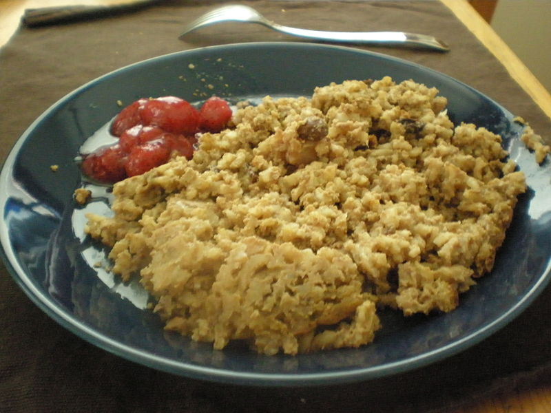
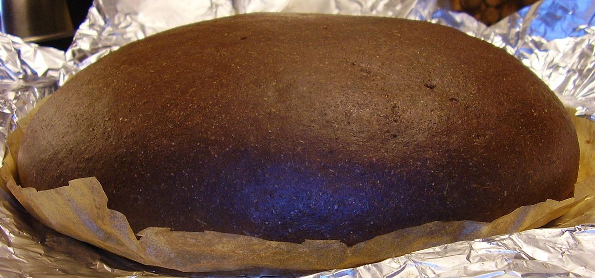
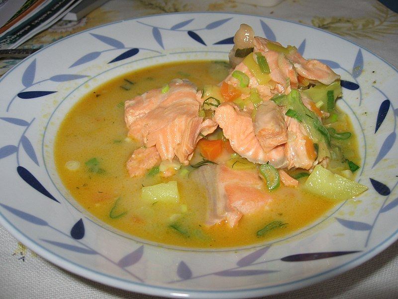

Comidas Típicas
A culinária da Finlândia é notável por combinar geralmente pratos tradicionais e alta cozinha com preparação ao estilo europeu contemporâneo. O peixe e a carne têm um papel proeminente nos pratos tradicionais finlandeses da parte ocidental do país, enquanto os pratos da parte oriental tradicionalmente incluem vários vegetais e cogumelos.
Os pratos finlandeses usam frequentemente produtos integrais (centeio, cevada, aveia) e bagas (mirtilo e arandos-vermelhos, e espinheiro cerval). O leite e os seus derivados como o leitelho são muito usados como alimento, bebida ou em várias receitas. Tradicionalmente, era comum o uso de vários tipos de nabos, mas estes foram substituídos pela batata após a sua introdução no século XVIII.
Alguns dos principais pratos da Finlândia:
Maksalaatikko
Consiste num arroz de forno com fígado de bovino, podendo também ser preparado com carne.
Kalakukko
Consiste de um pão recheado, normalmente feito com farinha de centeio, e recheio consiste de carne de peixe, de porco e bacon, temperados com sal.
Sopa de Salmão ou Lohikeitto
Além do peixe (O próprio Salmão), pode também incluir batata, cebola, água, leite, natas, sal, pimenta, endro, folhas de louro, cenoura, aipo e manteiga.